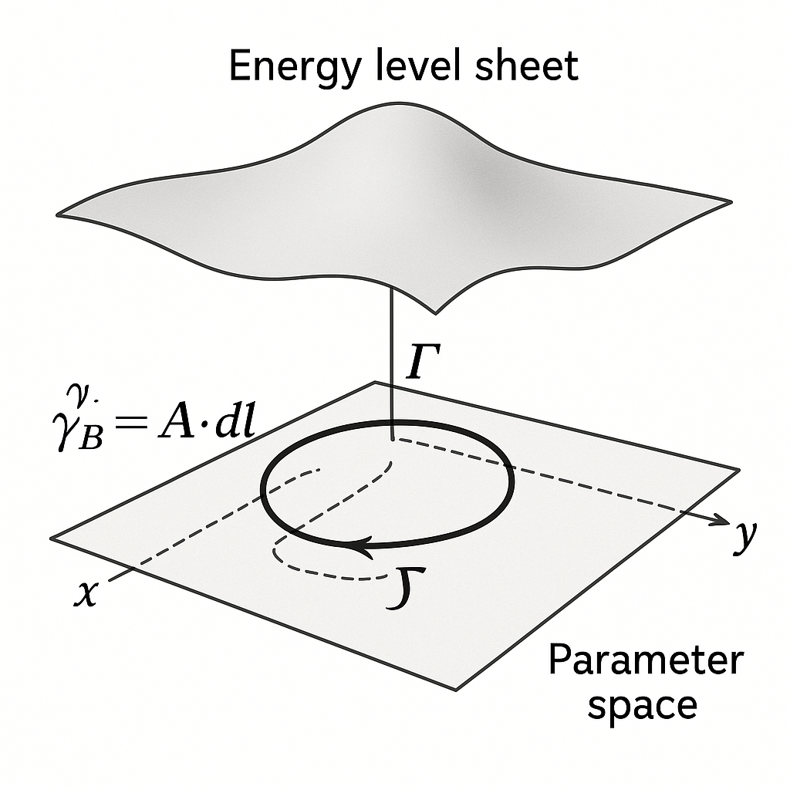
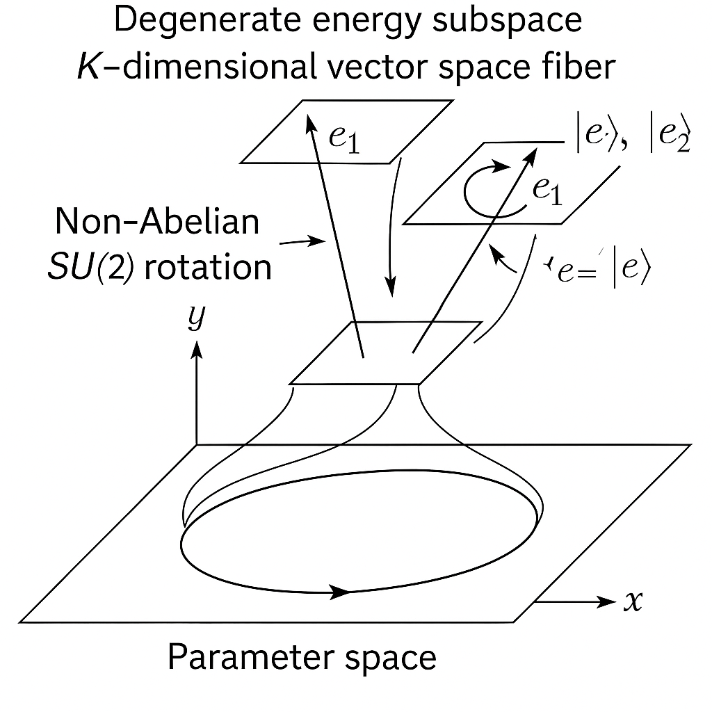
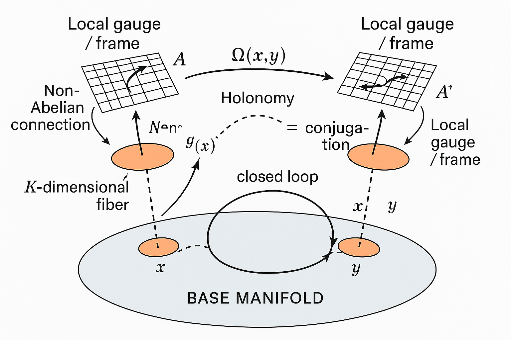
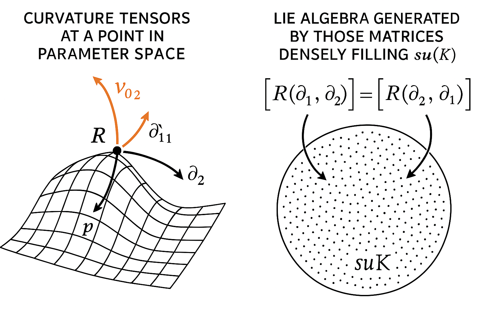
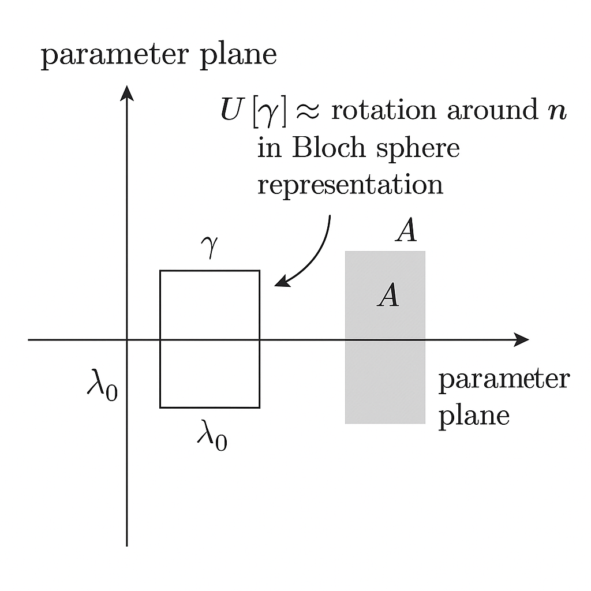
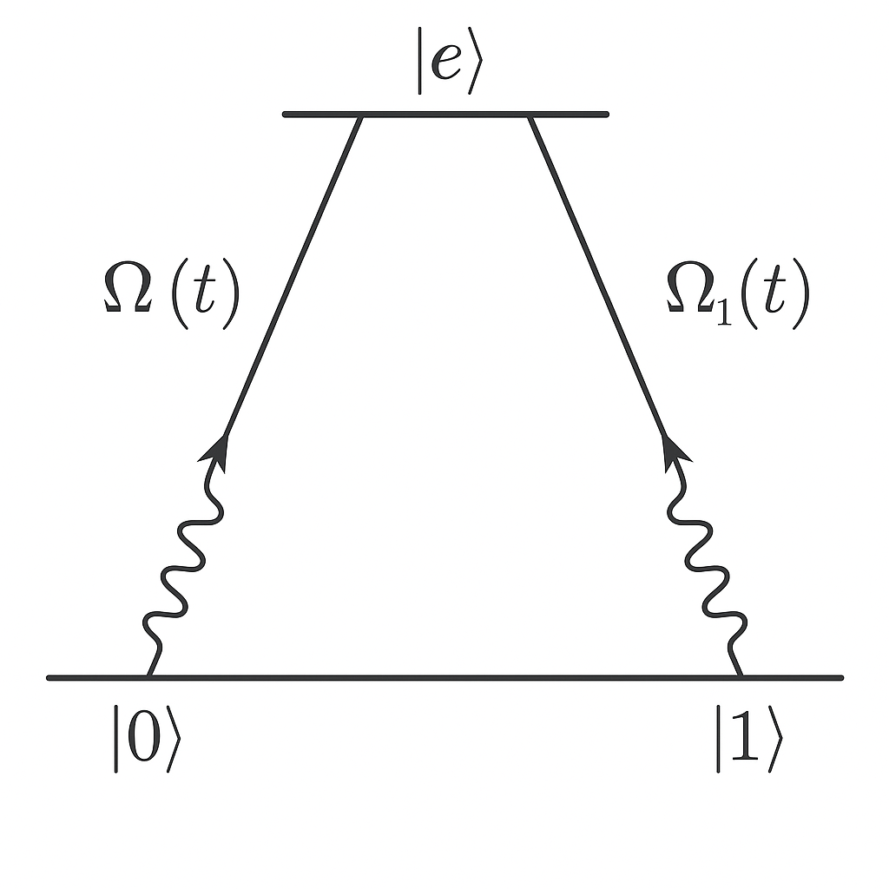
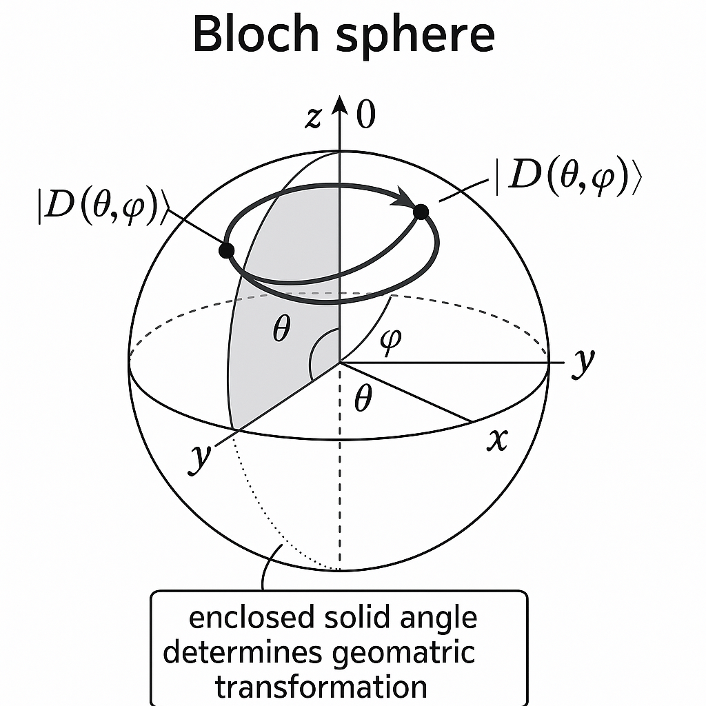
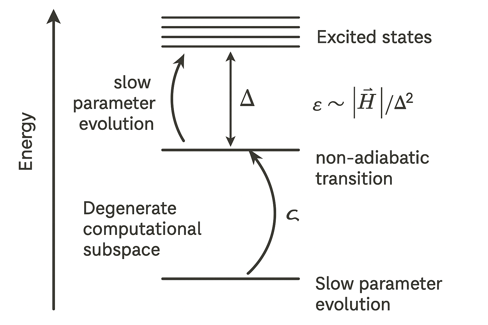
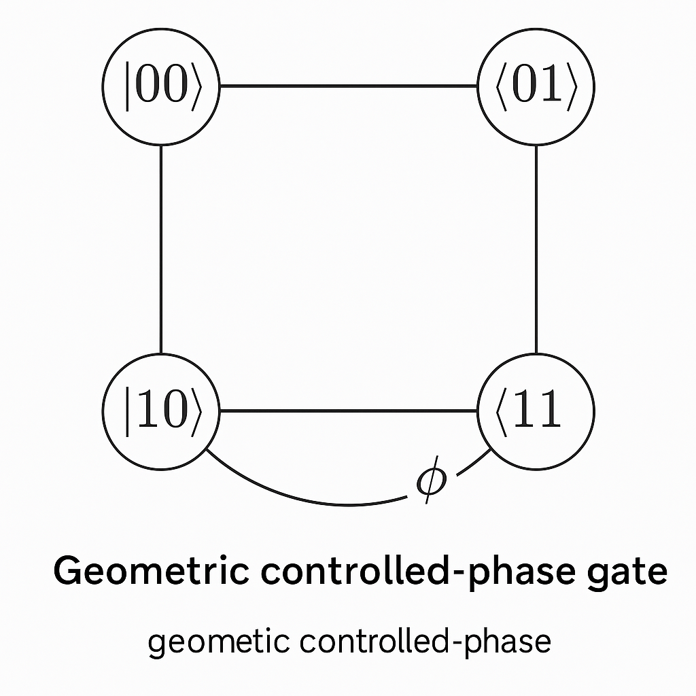

Generated by ChatGPT on 2025-12-11
逐字稿下載：ChatGPT_zh_L02_第_2_講_Holonomic_Quantum_Computation主題_2.txt
完整音檔：
Segment 1:
Segment 2:
Segment 3:
Segment 4:
Segment 5:
Segment 6:
Segment 7:
Segment 8:
Segment 9:
Segment 10:
Segment 11:
Segment 12:
Segment 13:
本講延續主題 1 的基礎，進一步系統性建構「全同態量子計算（Holonomic Quantum Computation, HQC）」的數學結構與實作策略，重點放在：
考慮一個參數依賴的哈密頓量 \(H(\lambda)\)，\(\lambda \in \mathcal{M}\) 是某個參數流形上的點。假設對每個 \(\lambda\)，\(H(\lambda)\) 具有非簡併本徵態 \(\lvert n(\lambda)\rangle\)： \[ H(\lambda)\lvert n(\lambda)\rangle = E_n(\lambda)\lvert n(\lambda)\rangle. \] 若參數 \(\lambda(t)\) 沿著一條閉合路徑 \(\gamma: t \in [0,T]\mapsto \lambda(t)\) 慢慢演化（滿足絕熱條件），初態為 \(\lvert \psi(0)\rangle = \lvert n(\lambda(0))\rangle\)，則在時間 \(T\) 之後，態為 \[ \lvert \psi(T)\rangle = e^{i\gamma_n[\gamma]} e^{-\frac{i}{\hbar}\int_0^T E_n(\lambda(t))dt} \lvert n(\lambda(0))\rangle, \] 其中幾何相位（Berry phase）為 \[ \gamma_n[\gamma] = i\oint_{\gamma} \langle n(\lambda) \vert \nabla_\lambda n(\lambda)\rangle \cdot d\lambda. \] 這是阿貝爾 U(1) 相位，對態向量僅施加一個整體相位因子。

Holonomic Quantum Computation 的核心在於：不再只考慮單一本徵態，而是考慮一個簡併子空間。令 \(H(\lambda)\) 的某個本徵值 \(E_0(\lambda)\) 在一個 \(K\) 維簡併子空間上： \[ H(\lambda)\lvert \phi_\alpha(\lambda)\rangle = E_0(\lambda)\lvert \phi_\alpha(\lambda)\rangle, \quad \alpha = 1,\dots,K. \] 這些 \(\{\lvert \phi_\alpha(\lambda)\rangle\}\) 在不同 \(\lambda\) 處可選取為一個「規範」（gauge choice）。絕熱演化下，初始在此簡併空間的態 \(\lvert \psi(0)\rangle = \sum_\alpha c_\alpha(0)\lvert \phi_\alpha(\lambda(0))\rangle\)，其演化在時間 \(T\) 後為 \[ \lvert \psi(T)\rangle = \sum_{\beta} \Bigg[ \mathcal{P}\exp\Bigg( i\oint_{\gamma} A(\lambda)\cdot d\lambda \Bigg) \Bigg]_{\beta\alpha} c_\alpha(0)\, e^{-\frac{i}{\hbar}\int_0^T E_0(\lambda(t))dt}\, \lvert \phi_\beta(\lambda(0))\rangle, \] 其中 \(\mathcal{P}\) 表示路徑排序，且 \[ A_\mu(\lambda)_{\alpha\beta} = i\langle \phi_\alpha(\lambda)\vert \partial_{\lambda^\mu} \phi_\beta(\lambda)\rangle, \] 稱為非阿貝爾 Berry 連接（Wilczek–Zee 連接）。對於閉合路徑 \(\gamma\)，幾何演化算符（holonomy）為 \[ U_\text{geom}[\gamma] = \mathcal{P}\exp\Bigg( i\oint_{\gamma} A(\lambda)\cdot d\lambda \Bigg) \in U(K), \] 這是一個作用在簡併子空間上的 \(K\times K\) 酉矩陣。
直覺：當能級簡併時，絕熱演化不僅能給每個本徵態一個相位，還能在這個簡併子空間內「旋轉」不同本徵態的線性組合。這個旋轉正是我們要當作量子邏輯門來使用。

在 HQC 中，我們選擇某個簡併能階的本徵子空間 \(\mathcal{H}_\text{comp}(\lambda)\) 作為「計算子空間」或「邏輯子空間」，其維度 \(K\) 通常為 \(2^n\)（\(n\) 個邏輯量子位元）。對每個 \(\lambda\)，定義 \[ \mathcal{H}_\text{comp}(\lambda) = \text{span}\{\lvert \phi_\alpha(\lambda)\rangle\}_{\alpha=1}^K. \] 絕熱條件下，若系統一開始準備在 \(\mathcal{H}_\text{comp}(\lambda_0)\) 中，沿任意閉合路徑 \(\gamma\) 演化後，最終仍留在 \(\mathcal{H}_\text{comp}(\lambda_0)\)，且其作用即為幾何 holonomy： \[ U_\text{HQC}[\gamma] = \mathcal{P}\exp\Bigg( i\oint_{\gamma} A(\lambda)\cdot d\lambda \Bigg). \]
我們希望藉由適當設計 \(\gamma\) 的型態，讓上述 \(U_\text{HQC}[\gamma]\) 實現任何所需的量子邏輯門（如單量子位元的任意旋轉、兩量子位元的受控閘等）。
在實作上，須確保動力相位對邏輯運算不起作用，或至少可被簡單地補償。對於簡併能階 \(E_0(\lambda)\)，演化中的總相位因子為 \[ e^{-\frac{i}{\hbar}\int_0^T E_0(\lambda(t))dt}. \] 由於此因子對整個子空間只是一個整體相位，對邏輯運算（以射線空間而言）是無關的。重要的是：避免不同邏輯狀態對應到不同能量，使得它們獲得不同動力相位。這正是「簡併能階」的關鍵。
直覺：簡併確保「能量一樣」，因此所有邏輯基底在演化過程中得到同樣的動力相位，邏輯變換完全由幾何貢獻決定。
數學上，\(\{\mathcal{H}_\text{comp}(\lambda)\}_{\lambda\in\mathcal{M}}\) 構成一個向量束（vector bundle），結構群為 \(U(K)\)。在每一點 \(\lambda\)，選擇一組規範（規定基底 \(\{\lvert\phi_\alpha(\lambda)\rangle\}\)），就像在流形上選擇座標。改變規範相當於 \[ \lvert \tilde{\phi}_\alpha(\lambda)\rangle = \sum_\beta [V(\lambda)]_{\beta\alpha}\lvert \phi_\beta(\lambda)\rangle, \quad V(\lambda)\in U(K). \] 在此 gauge 變換下，連接轉換為 \[ A_\mu(\lambda) \to \tilde{A}_\mu(\lambda) = V(\lambda)A_\mu(\lambda)V^\dagger(\lambda) - i (\partial_{\lambda^\mu} V(\lambda))V^\dagger(\lambda), \] 如同楊–米爾斯規範場的轉換律。
holonomy 的 gauge 不變性：雖然 \(A(\lambda)\) 依賴規範選擇，但沿閉合路徑所得的 holonomy \(U_\text{HQC}[\gamma]\) 在物理上是良定義的，只是會以相似變換方式改變： \[ U_\text{HQC}[\gamma] \to V(\lambda_0)U_\text{HQC}[\gamma]V^\dagger(\lambda_0), \] 而這不會影響其作為「作用在物理子空間上的酉變換」之本質。

如同規範場論，一旦定義連接 \(A_\mu(\lambda)\)，即可定義曲率： \[ F_{\mu\nu}(\lambda) = \partial_{\mu}A_{\nu}(\lambda) - \partial_{\nu}A_{\mu}(\lambda) + i[A_\mu(\lambda), A_\nu(\lambda)]. \] 物理解釋：\(F_{\mu\nu}\) 測量平行運輸（parallel transport）的非對易性，是幾何相位的「局部密度」。若 \(F_{\mu\nu}=0\) 在某區域，則此區域內的幾何相位可由純規範（pure gauge）去除，即該處的幾何效應是 trivial 的。
holonomy 群（holonomy group）定義為：從某個基點 \(\lambda_0\) 出發，所有閉合路徑 \(\gamma\) 所產生的 holonomy 的集合： \[ \mathcal{H}(\lambda_0) = \big\{ U_\text{HQC}[\gamma] \,\big|\, \gamma:\lambda_0\to\lambda_0 \big\} \subseteq U(K). \] 若 \(\mathcal{H}(\lambda_0)\) 在 \(U(K)\) 中是「稠密」或等於某個子群（例如 \(SU(K)\)），則意味著只要適當設計路徑 \(\gamma\)，就能實現廣泛的酉變換。
HQC 的普適性條件將與曲率張量所生成的李代數有關，這在下一小節詳述。
給定某個參數流形 \(\mathcal{M}\) 與其上的簡併向量束 \(\mathcal{H}_\text{comp}\)，連接 \(A_\mu(\lambda)\) 定義了在每個 \(\lambda\) 之下屬於 \(\mathfrak{u}(K)\) 的矩陣。對於任意路徑 \(\gamma\)，其 holonomy 是 \[ U[\gamma] = \mathcal{P}\exp\left(i\int_{\gamma} A_\mu(\lambda)d\lambda^\mu\right). \] 我們關心的是：藉由所有可能路徑 \(\gamma\)，所能達到的 transformation set \(\mathcal{H}(\lambda_0)\) 是否足以生成整個 \(\mathrm{U}(K)\)（或至少 \(\mathrm{SU}(K)\)）。
一個常用的判據來自 Ambrose–Singer 定理的物理化表述：在足夠小的區域內，holonomy 群的李代數是由曲率 \(F_{\mu\nu}(\lambda)\) 及其共變導數在所有方向上所生成的李代數。形式化地，若定義在某點 \(\lambda_0\) \[ \mathfrak{g}_0 = \text{Lie}\Big( \{ F_{\mu\nu}(\lambda_0), D_{\rho_1}F_{\mu\nu}(\lambda_0), \dots \} \Big) \subseteq \mathfrak{u}(K), \] 則局部 holonomy 群的李代數為 \(\mathfrak{g}_0\)。若 \(\mathfrak{g}_0\) 與 \(\mathfrak{su}(K)\) 等價（同構），則在局部上可以實現任意接近 \(SU(K)\) 的酉變換。
結論：HQC 的局部普適性條件：

考慮最小非平凡的情形 \(K=2\)，即一個兩維簡併子空間，對應一個邏輯量子位元。連接 \(A_\mu\) 為 \(\mathfrak{u}(2) = \mathfrak{su}(2)\oplus \mathfrak{u}(1)\) 的元素，可分解為 \[ A_\mu(\lambda) = a_\mu^0(\lambda)\,\mathbb{I}_2 + \sum_{j=1}^3 a_\mu^j(\lambda)\,\sigma_j, \] 其中 \(\sigma_j\) 是 Pauli 矩陣。曲率 \[ F_{\mu\nu}(\lambda) = \partial_\mu A_\nu - \partial_\nu A_\mu + i[A_\mu, A_\nu], \] 同樣可以展開在 Pauli 基底上。若存在若干 \((\mu,\nu)\) 使得三個方向上的 Pauli 生成子 \(\sigma_x, \sigma_y, \sigma_z\) 都能從 \(\{F_{\mu\nu}(\lambda_0)\}\) 和其共變導數中產生，則便可生成整個 \(\mathfrak{su}(2)\)。
這意味著，對於小迴圈 \(\gamma\)（例如在 \(\lambda\)-空間的無窮小矩形路徑），所得的 holonomy 可近似 \[ U[\gamma] \approx \exp\left(i F_{\mu\nu} \Delta\lambda^\mu\Delta\lambda^\nu\right), \] 若不同方向上能獨立調控 \(\Delta\lambda^\mu\Delta\lambda^\nu\)，便可以近似生成不同方向的 SU(2) 旋轉；進一步利用 Baker–Campbell–Hausdorff（BCH）公式組合這些小旋轉，便能構成任意 SU(2) 操作。
直覺：曲率矩陣 \(F_{\mu\nu}\) 就像是「微小迴路」造成的 infinitesimal 旋轉生成子；只要這些生成子張成了整個 \(\mathfrak{su}(2)\)，便可以藉由不同形狀與方向的迴路組合出任意的單量子位元幾何閘。
在實驗上實現幾何閘，一個常用策略是以「小迴路」（small loops）approximation 來控制旋轉角度。考慮一個相對 \(\lambda_0\) 很小的閉合路徑，包圍面積元素 \(\Sigma^{\mu\nu}\)： \[ \Sigma^{\mu\nu} = \int\int_S dS^{\mu\nu}, \] 則 holonomy 可展開為 \[ U[\gamma]\approx \exp\left(iF_{\mu\nu}(\lambda_0)\,\Sigma^{\mu\nu}\right), \] 忽略更高階項。此時，調整路徑的「方向」決定採用哪個 \(F_{\mu\nu}\)，調整路徑包圍的面積大小決定旋轉角度（群元素指數中的係數大小）。
例如，若在一個兩維參數平面 \((\lambda^1,\lambda^2)\) 上存在非零曲率 \(F_{12} = \vec{n}\cdot\vec{\sigma}\,\kappa\)（\(\vec{n}\) 為單位向量，\(\kappa\) 為常數），則在該平面上的小矩形迴路所導致的 holonomy 近似為 \[ U[\gamma] \approx \exp\Big(i\kappa\,\mathcal{A}\,\vec{n}\cdot\vec{\sigma}\Big), \] 其中 \(\mathcal{A}\) 為矩形面積。此即沿 \(\vec{n}\) 軸的 SU(2) 旋轉，角度 \(2\kappa \mathcal{A}\)。因此，可透過控制迴路面積來精調閘門角度。

由於連接 \(A(\lambda)\) 為非阿貝爾，不同路徑的 holonomy 一般不對易： \[ U[\gamma_1]U[\gamma_2] \neq U[\gamma_2]U[\gamma_1]. \] 這可以被用來設計一組「基本幾何門」，如同 gate set。具體做法：
利用 BCH 公式，對小迴路所產生的近似生成子 \(\{X_i\}\subset\mathfrak{su}(K)\)，可經由 commutator \[ [e^{\epsilon X_1}, e^{\epsilon X_2}] = e^{\epsilon X_1}e^{\epsilon X_2}e^{-\epsilon X_1}e^{-\epsilon X_2} \approx e^{\epsilon^2[X_1,X_2]}, \] 來產生更多李代數元素。重複此操作，若最終能生成整個 \(\mathfrak{su}(K)\)，則幾何門集為普適 gate set。
一個重要且實作上常見的範例是三能級 Lambda (\(\Lambda\)) 結構： \[ \lvert 0\rangle, \lvert 1\rangle \text{（邏輯態）}, \quad \lvert e\rangle \text{（激發態）}, \] 其中 \(\lvert 0\rangle\) 和 \(\lvert 1\rangle\) 皆與 \(\lvert e\rangle\) 耦合，可由兩個可控的雷射場（或微波場）實現。考慮在旋轉框架中的有效哈密頓量（忽略快振盪項）： \[ H(t) = \hbar\Big( \Omega_0(t)\lvert e\rangle\langle 0\rvert + \Omega_1(t)\lvert e\rangle\langle 1\rvert + \text{h.c.} \Big), \] 其中 \(\Omega_0(t), \Omega_1(t)\) 是複數拉比頻率，可視為可控參數。

, |1> and an excited state |e>; arrows indicating controllable couplings Omega_0(t) and Omega_1(t).">定義暗態（dark state）與亮態（bright state）： \[ \lvert D(t)\rangle = \frac{1}{\Omega(t)}\big( \Omega_1(t)\lvert 0\rangle - \Omega_0(t)\lvert 1\rangle \big), \] \[ \lvert B(t)\rangle = \frac{1}{\Omega(t)}\big( \Omega_0^*(t)\lvert 0\rangle + \Omega_1^*(t)\lvert 1\rangle \big), \] 其中 \(\Omega(t) = \sqrt{|\Omega_0(t)|^2+|\Omega_1(t)|^2}\)。可檢查： \[ \langle D(t)\vert B(t)\rangle = 0, \quad \langle D(t)\vert e\rangle = 0, \] 且在此基底下，哈密頓量只把 \(\lvert B\rangle\) 與 \(\lvert e\rangle\) 耦合，\(\lvert D\rangle\) 為本徵值為 0 的本徵態（暗態）。
在合適的脈衝設計下，可以做到：
常見做法是將兩個拉比頻率寫成球座標形式： \[ \Omega_0(t) = \Omega(t)\cos\frac{\theta(t)}{2}, \quad \Omega_1(t) = \Omega(t)e^{i\varphi(t)}\sin\frac{\theta(t)}{2}, \] 則暗態為 \[ \lvert D(\theta,\varphi)\rangle = \sin\frac{\theta}{2}\lvert 0\rangle - e^{i\varphi}\cos\frac{\theta}{2}\lvert 1\rangle. \] 可視為邏輯量子位元在 Bloch 球上對應的某一點。若控制 \((\theta(t),\varphi(t))\) 沿著閉合路徑 \(\gamma\) 在參數球面上演化，便會產生幾何相位（在簡併情況是非阿貝爾旋轉，需考慮整個簡併子空間）。

; show initial and final points coinciding, and an indication that the enclosed solid angle determines the geometric transformation.">具體的非阿貝爾化通常需要至少兩個暗態（即兩維簡併空間）。在擴展型三能級或多能級系統中，可設計多個暗態，使得其依賴於多個控制參數，從而實現非阿貝爾幾何旋轉。
在超導量子電路中，例如針對 transmon 或 Xmon，系統天然具有多能階結構 \(\lvert 0\rangle, \lvert 1\rangle, \lvert 2\rangle, \dots\)。可以選擇：
兩量子位元幾何閘則可利用耦合兩個超導位元（如透過共用諧振腔或直耦合元件），將某些雙位元態與輔助態形成簡併子空間，再以類似策略設計幾何路徑。實驗上已有展示如幾何 CNOT 或幾何受控相位閘。
幾何相位（holonomy）的重要賣點之一是對於演化時間參數化的魯棒性：在絕熱近似與閉合路徑已固定的情況下，只要路徑在參數空間的形狀與包圍面積不變，演化速度的微小變化不應影響最終 holonomy： \[ \lambda(t)\ \to\ \lambda(\tau(t)), \quad \tau(0)=0,\ \tau(T')=T, \] 在絕熱假設下應給出相同的幾何結果。這意味著對於控制時間精度的需求在某種程度上被緩和。
然而仍有數種誤差來源：
考慮一個期望路徑 \(\gamma\) 與實際路徑 \(\gamma+\delta\gamma\)，將 holonomy 的差異展開為 \[ \delta U = U[\gamma+\delta\gamma] - U[\gamma]. \] 在小擾動極限下，可以用曲率張量與路徑變化的關係進行線性展開。若微小擾動對路徑所包圍的面積 \(\Sigma^{\mu\nu}\) 只引入二階以上變化，則一階誤差可能消失，顯示出一定程度的幾何穩健性。
然而，實際上由於連接 \(A_\mu(\lambda)\) 一般非平坦，且 \(\delta\gamma\) 可能改變曲率加權積分，因此幾何門對某些雜訊方向仍然敏感。這是為何實驗上常討論「幾何門對特定型態的控制雜訊具有較高抵抗力」而非對所有雜訊都免疫。
絕熱條件可由標準的時間依賴微擾或 Landau–Zener 理論給出估計：若簡併子空間與其他能階之間的能隙為 \(\Delta(t)\)，陣列 \(H(t)\) 改變的速度量度為 \[ \epsilon \sim \max_t \frac{\Vert \dot{H}(t)\Vert}{\Delta(t)^2}, \] 則非絕熱躍遷幅度比例約為 \(O(\epsilon)\)。更精細的 bound 為： \[ \Vert \lvert \psi(T)\rangle - \lvert \psi_\text{ad}(T)\rangle\Vert \le C \max_t \frac{\Vert \dot{H}(t)\Vert}{\Delta(t)^2}, \] 其中 \(\lvert \psi_\text{ad}(T)\rangle\) 為理想絕熱演化的態。為了將非絕熱誤差控制在給定門誤差閾值 \(\delta\) 以下，需選擇足夠長的演化時間 \(T\)，但過長又會增加退相干風險，形成折衷。

在某些噪音模型下（例如含有穩態偏移但無快變動的控制誤差），幾何門可能比純動力（dynamic）門更穩健，其原因在於：
假設我們已在某系統內構造出一個兩維簡併子空間 \(\mathcal{H}_\text{comp}(\lambda)\)，對應一個邏輯量子位元。若連接 \(A_\mu(\lambda)\) 之曲率在某區域可生成 \(\mathfrak{su}(2)\)，則可以定義以下幾何 gate set：
形式上，任意 \(\mathrm{SU}(2)\) 元素可寫成 Euler 分解： \[ U = e^{i\alpha\sigma_z}e^{i\beta\sigma_y}e^{i\gamma\sigma_z}, \] 因而只要幾何閘集中能實現三個基本軸向旋轉即可。
要達成普適量子計算，除了任意單量子位元閘之外，還需要至少一個不可分解為張量積的兩量子位元閘，例如 CNOT 或受控相位閘。HQC 中常見策略是：

while leaving others untouched, with a caption explaining it's a geometric controlled-phase gate.">綜合上述，我們可給出 HQC 的普適性框架：
傳統 HQC 依賴絕熱演化，速度受限而難與退相干時間競爭。為解決此問題，近年出現非絕熱 holonomic 閘 的框架，其基本想法是：
HQC 與拓撲量子計算（topological quantum computing）有深刻關聯：
在真實系統中，開放量子系統的非厄米演化與量子跳（quantum jumps）會影響 holonomy 結構。現代研究嘗試：
本講深入探討了 Holonomic Quantum Computation 的核心數學與物理結構：
在第 3 講中，我們將進一步集中於「Holonomic Quantum Annealing」的正式架構與具體演算法，探討如何把幾何 holonomy 的概念嵌入量子退火（Quantum Annealing）流程，並分析其與 gate-based HQC 的等價性與差異。